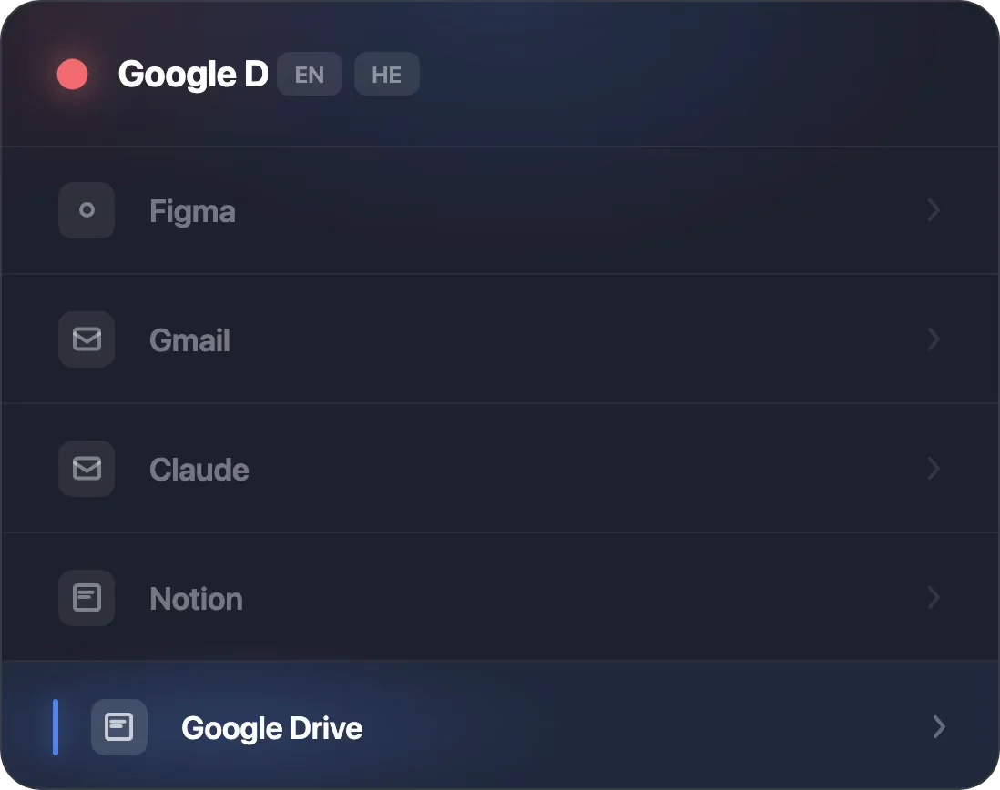
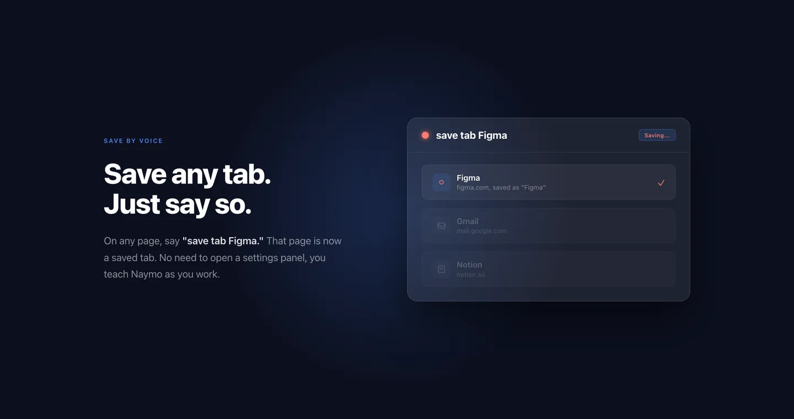
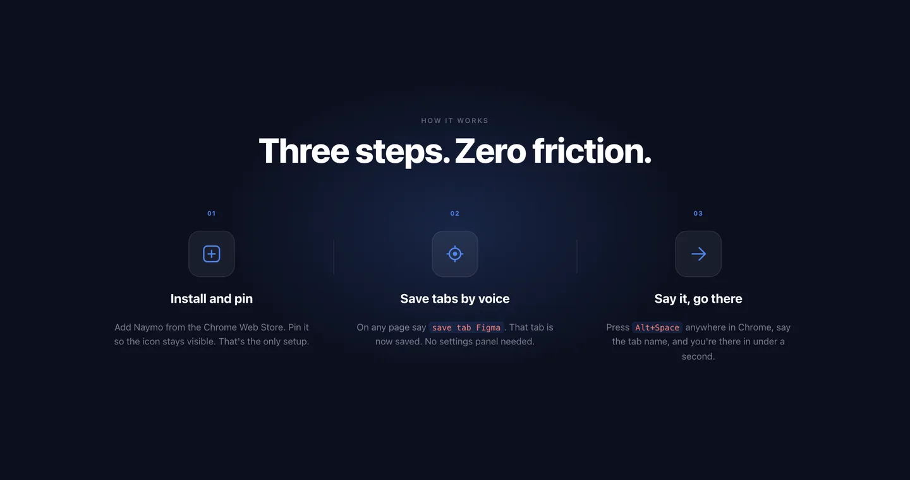
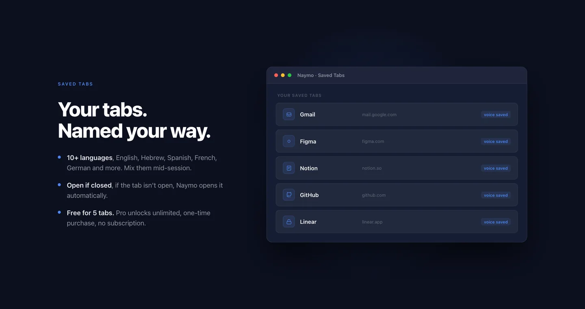

Voice tab switching for Chrome
I keep 40 tabs open and never click the right one first time. Naymo listens for a hotkey, takes any part of a tab name, and puts that tab in front before you finish saying it. It also saves tabs by voice, so the command still works on something you closed last week.

What annoyed me
Forty tabs, and the one I wanted was always the one I could not find. Every existing switcher still made me read a list.
What I decided
Speech recognition runs locally in the page, not on a server. No API cost, no transcript stored, and no round trip to wait on.
What I built
A Manifest V3 extension: a service worker, a content script injected across all URLs, and an overlay that matches loosely enough to survive a half-said name.
Scope
10+ languages, Hebrew includedRecognition runs in the browser, so the list is the browser's
Nothing leaves the machineNo server, no API cost, no transcript stored
Manifest V3, service worker and content scriptDesigned, coded and released by me
Live at v0.1.5Saved tabs reopen after the tab is closed


